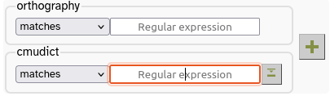

Pronunciation Tags
LaBB-CAT can be integrated with the CMU Pronouncing Dictionary, which is a free pronounciation dictionary of English maintained by the Speech Group in the School of Computer Science at Carnegie Mellon University (CMU). The pronunciations are based on American English, so are most suitable for recordings of North American speakers.
The dictionary’s suitability for other varieties of English depends on which variety and what specific aspects of pronunciation will be studied.
In this exercise you will:
- install the CMU Pronouncing Dictionary layer manager module, and
- use it to tag each word with its pronunciations.
Install the CMU Dictionary
The first thing we’re going to to is install the CMU Pronouncing Dictionary layer manager, which is a LaBB-CAT module that integrates with the dictionary…
- In LaBB-CAT, select the layer managers menu option.
You will see a list of pre-installed layer managers, which are modules that can perform automatic annotation tasks. The CMU Pronouncing Dictionary layer manager isn’t pre-installed, because it is language-specific. - Click the List of layer managers that are not yet installed link near the bottom.
- Find CMU Pronouncing Dictionary in the list, and press its Install button.
- Press Install on the resulting information page.
This displays some further information about the layer manager, allowing you to optionally upload an alternative version of the dictionary file.
We won’t upload a file, we’ll be using the standard file that is included in the layer manager. - Press Configure.
You will see a progress bar while the layer manager loads the data from the dictionary file into the LaBB-CAT database. This will take a minute or so. - Once it’s finished, you will see a new window open with information about the CMU Pronouncing Dictionary layer manager.
Annotate Words with Pronunciations
Now that we’ve installed the layer manager, we’ll create an annotation layer that tags words with their pronunciations.
- Select the word layers option on the menu.
You will see a list of existing word layers, including the orthography layer, the lexical layer, etc. - The column headings are also a form for defining a new word layer. Fill in the following details in this form:
- Layer ID:
cmudict - Type: Phonological
- Alignment: None
- Manager: CMU Pronouncing Dictionary
- Description:
All possible phonemic transcriptions for each word.
- Layer ID:
- Press New to add the layer.
You will see the layer configuration form.
The CMUdict file contains pronunciations expressed using the ‘ARPAbet’ symbols, in which a phonemes are one or two uppercase letters, possibly suffixed with a digit indicating stress, and a space between each phoneme. e.g. the pronunciation for the word “transcription” is:
T R AE2 N S K R IH1 P SH AH0 N
The layer manager can also convert the pronunciations to use an alternative set of symbols called ‘CELEX DISC’ which uses exactly one character per phoneme no intervening spaces. e.g. the pronunciation for the word “transcription” is:
tr{nskrIpS@n
Which set of symbols you choose depends somewhat on what you want to do with the labels; using ‘ARPAbet’ conserves stress information, but CELEX DISC can be easier for searching for pronunciation patterns. For this exercise, we’ll use ‘CELEX DISC’.
- Set the Encoding field to CELEX DISC, and leave the default values for everything else.
 If you’re curious about what the configuration options do, hover your mouse over each one to see further information about what the setting does.
If you’re curious about what the configuration options do, hover your mouse over each one to see further information about what the setting does.
- Press Set Parameters.
You will see a message asking you if you want (re)generate the layer data now. - Press Regenerate.
You will see a progress bar moving across the page while the annotations are being generated. When it is finished, you will see a message saying Layer complete. - Once the layer has finished generating, select the transcripts menu option, and open the first transcript in the list by clicking the transcript name.
- Select the Layers tab at the top to show a list of tickable annotation layers.
- Tick your new cmudict layer.
The tags will load and you’ll see that each word is tagged with a phonemic transcription.
The IPA symbols are being displayed by LaBB-CAT to provide a linguist-friendly interpretation of the phonemic transcription. But you can see the underlying CELEX DISC characters by de-activating this ‘interpretation’.
- On the Layers tab, to the right of the name of the cmudict layer, there is a small ‘tags’ 🏷 icon.
Hover your mouse over this icon to see what it does. - Click the tags icon, to see what the layer manager is actually producing.
You may find that this is somewhat harder to read. It’s similar to the ‘SAMPA’ system for encoding phonemes, which you may be familiar with, but diphthongs are generally represented by digits, and various other characters are used to represent affricates, etc. - Click the tags icon again, to return to the IPA view of the labels.
Search Across Layers
It’s nice to display the IPA symbols, but it’s important to understand the ARPAbet symbols (shown in the table below), because they are what we have to use when searching on the phonemes layer, which we are going to try now.
In the table, there are gaps where no ARPABET version of the phoneme is shown; this means that the CMU Pronouncing Dictionary contains no entries that include that phoneme.
| IPA | DISC | ARPABET | IPA | DISC | ARPABET | |||
| p | p |
P | pat | ɪ | I |
IH | KIT | |
| b | b |
B | bad | ε | E |
EH | DRESS | |
| t | t |
T | tack | æ | { |
AE | TRAP | |
| d | d |
D | dad | ʌ | V |
AH | STRUT | |
| k | k |
K | cad | ɒ | Q |
AH | LOT | |
| g | g |
G | game | ʊ | U |
UH | FOOT | |
| ŋ | N |
NG | bang | ə | @ |
[vowel ending in 0] | another | |
| m | m |
M | mat | i: | i |
IY | FLEECE | |
| n | n |
N | nat | α: | # |
AA | START | |
| l | l |
L | lad | ɔ: | $ |
AO | THOUGHT | |
| r | r |
R | rat | u: | u |
UW | GOOSE | |
| f | f |
F | fat | ɜ: | 3 |
ER | NURSE | |
| v | v |
V | vat | eɪ | 1 |
EY | FACE | |
| θ | T |
TH | thin | αɪ | 2 |
AY | PRICE | |
| ð | D |
DH | then | ɔɪ | 4 |
OY | CHOICE | |
| s | s |
S | sap | əʊ | 5 |
OW | GOAT | |
| z | z |
Z | zap | αʊ | 6 |
AW | MOUTH | |
| ∫ | S |
SH | sheep | ɪə | 7 |
NEAR | ||
| ʒ | Z |
ZH | measure | εə | 8 |
SQUARE | ||
| j | j |
Y | yank | ʊə | 9 |
CURE | ||
| x | x |
loch | æ | c |
timbre | |||
| h | h |
HH | had | ɑ̃ː | q |
détente | ||
| w | w |
W | wet | æ̃ː | 0 |
lingerie | ||
| ʧ | J |
CH | cheap | ɒ̃ː | ~ |
bouillon | ||
| ʤ | _ |
JH | jeep | |||||
| ŋ̩ | C |
bacon | ||||||
| m̩ | F |
idealism | ||||||
| n̩ | H |
burden | ||||||
| l̩ | P |
dangle |
- Select the search option on the menu, which allows you to search all participants by default.
- Tick the new cmudict layer.
Now you will see that our search matrix is two layers high by one word wide.
 - Search your new cmudict layer for words that start with “h” by entering
h.*(i.e. “h” followed by zero or more characters) in the cmudict box and hitting enterenter. - If the results page does not automatically open when the search is finished, click the Display results link that appears.
You will see that the results contain words that you might not expect, like “where”, “which” and “when”.
- Click one of these unexpected results, to open the transcript.
You will see that, in the transcript, the pronunciation appears to start with /w/, not with /h/. - Hover your mouse over the cmudict layer tag of the word.
You will see a list of all the pronunciations for that word not just the first one, which is displayed in the transcript.
You will see that, in addition to the pronunciation that starts with /w/, there’s another annotation that starts with /h/, which is invisible on the transcript.
These are all the possible phonemic transcriptions for the word, in the order they are found in the CMUdict dictionary file. Only the first one is displayed in the transcript, but when you do searches, all of them are searched. This can result in unexpected matches like this, but it can be useful, as it ensures that when you search for a particular phonemic pattern, all possible tokens are returned, not just those that match on the most ‘normal’ transcription.
Now we are going to search a multi-word, multi-layer pattern: “the” followed by a word starting with a vowel…
- Go to the search page.
- Create a search matrix that’s two words wide by pressing the button, and tick the orthography and cmudict layers.
- Type
thein the first orthography box. - Click the second box on the cmudict layer, but don’t enter anything in the box yet.
The box has a button to the right of it. - Hover the mouse over the button to see what it says, and then click it.
You will see that a section opens with a bunch of phoneme symbols on it; clicking on a phoneme adds its CELEX DISC representation to the search box.
In a regular expression, to match several single-letter symbols at once, you need to enclose the symbols in parentheses [].
For example, to match either the KIT vowel – I in DISC – or the FLEECE vowel – i in DISC, you would need a regular expression like this:
[Ii]
We want to match any vowel at all at the beginning of this second word, so you need to construct a regular expression for that.
You could use the square-brackets [ at the start of your pattern, and click each of the vowel symbols to add all possible vowels – you should add in all the vowels you see in the list that appears when you expand the IPA helper, including all the diphthongs. Finally, you would need to add the closing square bracket ].
Alternatively, you can simply click the VOWEL link in the ‘phoneme symbol selector’, which will add all the DISC vowels for you, already enclosed in square-brackets.
- Enter the regular expression to match any vowel, using either of the methods just mentioned.
- Be sure to append your ‘any vowel’ regular expression with
.*to ensure the search matches words that have phonemes after the initial vowel.
Some regular expressions are so long that not all of the expression is visible in the text box. You can see the whole expression by hovering your mouse over the text box.
- Run the search and check that it’s giving you what you expect. Notice that now there are no ‘false positives’ like “the one” that we might get if we searched using orthographic spelling only.
Now that you’ve generated an annotation layer, and have seen how the search matrix works, you might want to try out some of the searches listed below, or invent some others:
If you need help with creating regular expressions, try the online help page, which is accessible via the help icon  at the top right of the page.
at the top right of the page.
- Words which have the DRESS vowel as the second phoneme
- Words ending with a front vowel, followed by words beginning with /p/ or /b/
- Words that begin with “k” in their spelling, but begin with the phoneme /n/
- Words that begin with “k” in their spelling, but do not begin with the phoneme /n/